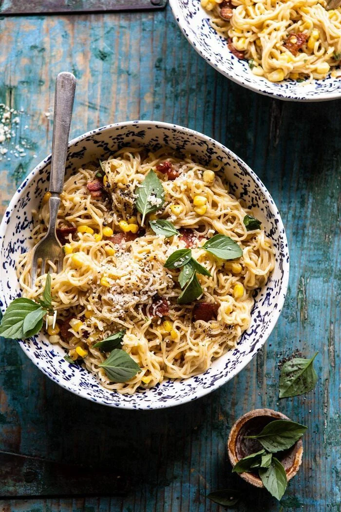

-
Description
Alright humans, here's where we're gonna diverge a bit. I've learned from some past shipmates that human's aren't fond of eating "bugs." Particularly, live bugs. Huge waste of protein in my opinion, but whatever. My human chef friend was "brave" enough to try the dish, and he thought he could make a similar dish out things humans would be more comfortable eating. However, this recipe contains an earthen avian's egg, so I have never tried it (The amount you earthlings rely on a birds "period" byproduct is grosser to me than any bug, but I digress). I just have to trust it tastes similar, though he told me it lacks the crunch that I think makes the meal.
As a subsitute for the mealworms, he made a "ramen carbonara." And then he used earthen pig bacon instead of Altean jaslop. I will point out it was his idea to add the corn to this meal, so no chicken jokes this time!
Original recipe on halfbakedharvest.com
Ingredients
- 4 slices thick-cut bacon, chopped
- 1 tablespoon extra virgin olive oil or butter
- 2 ears corn, kernels removed from the cob
- 2 cloves garlic, minced or grated
- 1/2 teaspoon crushed red pepper flakes
- Kosher salt and black pepper
- 1/2 cup fresh basil, chopped
- 1 tablespoon fresh thyme leaves
- 2 eggs, beaten (gross!)
- 1/2 cup freshly grated parmesan cheese
- 3 squares ramen noodles, seasoning packets discarded
Directions
- Heat a large skillet over medium-high heat and cook the bacon until crisp. Remove the bacon from the pan and drain onto paper towels. Add the oil or butter, corn, garlic, red pepper flakes, thyme, and season with salt and pepper. Cook 5 minutes or until the corn is golden. Stir in 1/4 cup basil. Remove from the heat.
- Beat together the eggs, parmesan, and remaining 1/4 cup of basil, in a large serving bowl. (I'm trying not to vomit)
- Bring a large pot of water to a boil. Boil the ramen according to package directions, until al dente. Before you drain the noodles scoop out about 1/2 cup cooking water, then drain.
- Immediately add the hot noodles to the egg/cheese mixture, tossing quickly (to ensure the eggs do not scramble) until the eggs thicken and create a sauce. The heat from the noodles will cook the eggs. Thin the sauce with a bit of the reserved pasta water, until it reaches your desired consistency. Add the corn and bacon, gently toss to combine. Season with freshly ground black pepper and salt.
- Divide amongst plates and top with fresh herbs
And if anyone is interested in trying the original with Mealworms, let me know!
-
